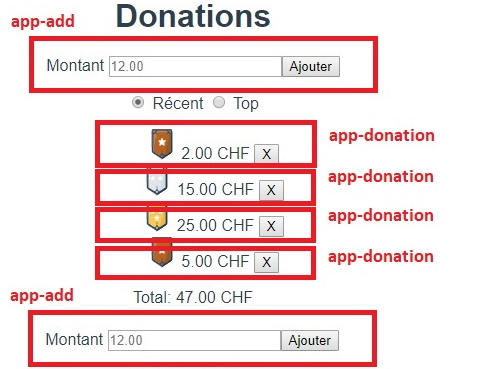
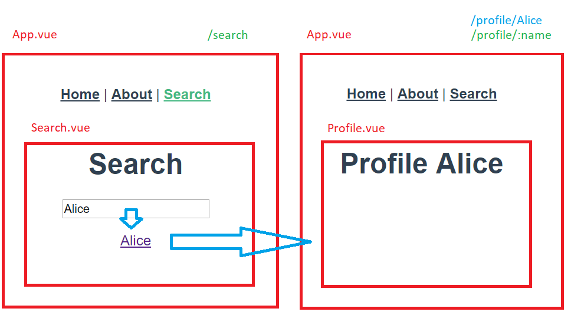
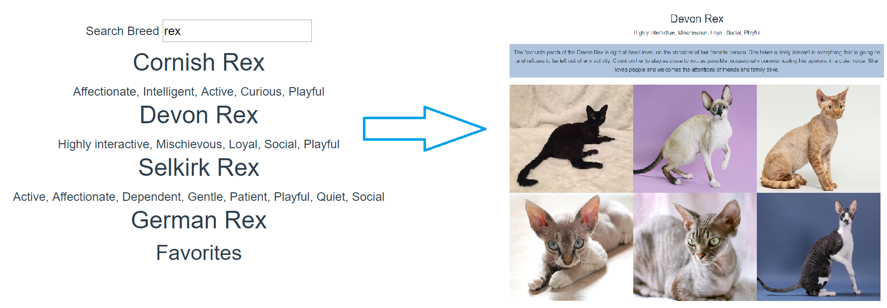

This is a collection of exercises to apply Vue.js concepts in practice. We assume that you already have a project setup and know the basic concepts of Vue.js.
The main concepts are mentioned in the title of the exercise. Most of the exercise built on top of the previous ones.
Have Fun!
Edit App.vue to create the following page :

- Clicking on Add, adds the amount in the input to a list below.
- If the amount is not greater than 0 an error message must be indicated, otherwise the message is hidden.
- You can delete an item from the list with the "X" button
Edit App.vue to create the following page:

- Recent or Top filters the list according to last added or descending value.
- The display of the amounts is transformed to always show 2 digits after the decimal point and CHF.
- Add a level image:
- level 1 up to 10
- level 2 up to 20
- level 3 after that
You can use this link in a JavaScript template string: https://gistcdn.githack.com/bfritscher/6ff8e74b80d44616944843fe83cc5d19/raw/2d4e25748fbbe681681932444a7ef339c90d4dde/chevron_${level}.svg
Refactor the application into components based on the following breakdown:

- Create a reusable function
toChf()that returns a number formatted in chf. - Add, transform the code, so that the application still works the same way.
Add transition effects to the message and list:

Persist data locally
- Save the list in the browser's localstorage each time you add or remove an item.
- When the page loads, if there is a list saved in the localstorage, then retrieve it.
Replace createWebHistory with createWebHashHistory in src/router/index.js
Add two more pages to create the following app:

- A search page without parameters
- On the search page dynamcially populate the
toattribute of arouter-linkbased on a text input field. - A Profile page with an url parameter, which displays this parameter on the page.
Use thecatapi to fetch cats
For example: "https://api.thecatapi.com/v1/images/search"
- Start simple getting some cats
- Then get more by clicking on a button.
Getting further (optional)
- Entering text in the search box displays a list of breeds.
- Clicking on an item in the list takes you to a detail page.
- The detail page uses the Breed id code retrieved as a URL parameter to search for 6 photos of that breed.
